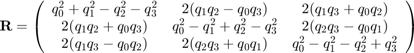

quat_convert
Convert quaterion(s) into other representation of rotation(s)
Calculate the rotation matrix corresponding to the quaternion. If "inQuat" contains more than one quaternion, the matrix is flattened (to facilitate the work with rows of quaternions), and can be restored to matrix form by "reshaping" the resulting rows into a (3,3) shape.
Contents
Syntax
converted = quat_convert(in_quat, new_type)
Input Arguments
- inQuat -- Quaternions or quaternion vectors. (Quaternion vectors are expanded to unit quaternions.)
- to -- Output type. Has to be "rot_mat" or "Gibbs"
'rot_mat' -> rotation matrix 'Gibbs' -> Gibbs vector
Output Arguments
- converted -- Corresponding converted output
Notes

More info under http://en.wikipedia.org/wiki/Quaternion
Examples
r = quat_convert([0, 0, 0.1], 'rot_mat') reshape(r, 3,3)
Check the input
r =
0.9800 -0.1990 0
0.1990 0.9800 0
0 0 1.0000
ans =
0.9800 -0.1990 0
0.1990 0.9800 0
0 0 1.0000